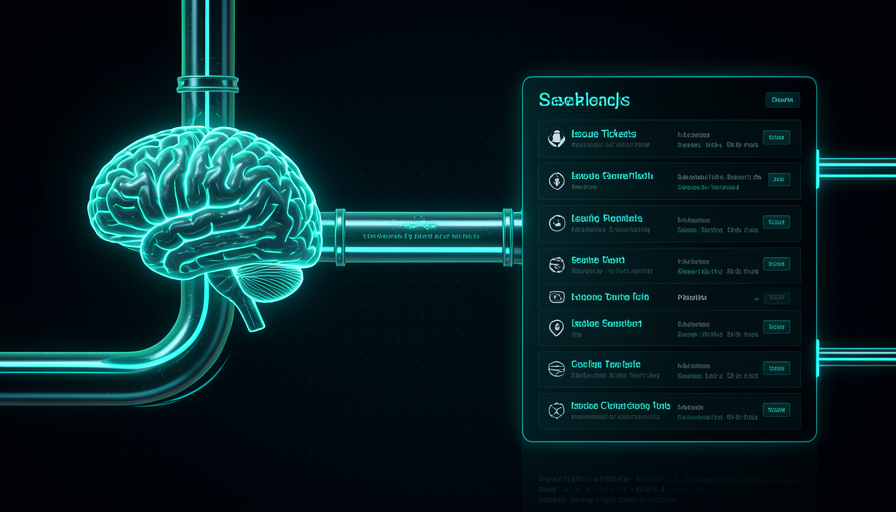
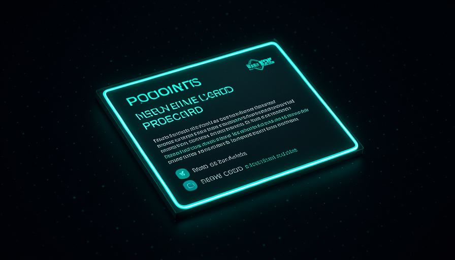
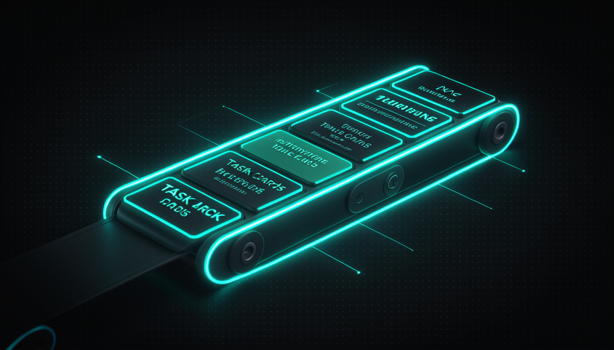

📖 Glossário vivo (leia antes — volte sempre que precisar)
Esta trilha é "pronta pra copiar". Aqui definimos os termos NOVOS deste módulo. Os fundamentos (modelo, agente, skill, prompt) já vêm da Trilha 1 — se esquecer, volte lá.
🗺️ Visão geral do pipeline
🧠 Imagine assim: uma cozinha de restaurante. Primeiro o garçom te entrevista ("com fritas? ao ponto?") até o pedido ficar sem ambiguidade. Depois isso vira uma comanda escrita (o documento). E a comanda é quebrada em estações (grelha, salada, sobremesa) — cada cozinheiro pega a sua. A ideia na sua cabeça virou trabalho organizado, sem você ir até o fogão.
Este módulo é o coração da forma como o Matt Pocock delega sem perder o controle. Em vez de uma skill gigante que faz tudo, ele encadeia três skills pequenas num pipeline: grill-me → two-PRD → to-issues. Como ele resume no transcript: "encadeia: grill-me → two-PRD → to-issues" — isso mantém "a maioria das descrições da IA escondidas e o conhecimento no humano". Cada passo tem um trabalho só, e você aprova antes de passar pro próximo.
O caminho é literal: você sai do "brain" (a ideia crua) e chega no "backlog" (uma fila de issues prontas). O porquê de quebrar em três: Pocock prefere procedures a deixar o modelo decidir tudo — "I know my skills, I don't want to delegate my thinking" ("eu conheço minhas skills, não quero delegar meu pensamento"). Cada elo é um ponto onde você pode parar, corrigir e seguir. O erro comum aqui é querer uma única mega-skill que vai "da ideia ao código" sem paradas: você perde visibilidade e a IA preenche as lacunas com suposições erradas.
Três skills pequenas em série batem uma mega-skill que faz tudo: você vê e corrige cada elo.

⚠️ Erro comum de iniciante
Querer "uma skill que faz da ideia ao deploy". Sem paradas, a IA decide tudo sozinha e você só descobre os erros no fim. O pipeline existe justamente pra dar a você um botão de "pausa" entre cada etapa.
Em 1 frase: o pipeline leva a ideia ao backlog em três passos com você aprovando cada elo — sem mega-skill caixa-preta.
🔥 Passo 1 — grill-me
🧠 Imagine assim: um advogado experiente antes de aceitar seu caso. Ele não diz "ok, entendi" — ele te interroga: "e se acontecer X? você pensou em Y? por que não Z?". No fim, vocês dois enxergam o caso igual. A grill-me faz isso com a sua ideia de produto.
A grill-me vira o modelo num entrevistador adversarial: ele faz perguntas, levanta ideias que você não considerou, e segue até chegar a um entendimento compartilhado. Pocock chama de "unreasonably effective" (absurdamente eficaz). Você a usa como substituto do plan mode: "aqui está minha ideia, me entreviste, vamos chegar a um entendimento, e tirar as esquisitices antes de implementar".
O texto exato da skill (do transcript): "Interview me relentlessly about every aspect of this plan until we reach a shared understanding. Walk down each branch of the design tree, resolving dependencies between decisions one-by-one. For each question, provide your recommended answer. Ask the questions one at a time. If a question can be answered by exploring the codebase, explore the codebase instead." Repare em duas regras de ouro: uma pergunta por vez (não te afoga) e se dá pra responder olhando o código, ele olha o código em vez de perguntar. O erro comum: responder no automático. A grill-me só vale a pena se você brigar de volta — discordar das recomendações dele quando fizer sentido.
Interview me relentlessly about every aspect of this plan until we reach a shared understanding. Walk down each branch of the design tree, resolving dependencies between decisions one-by-one. For each question, provide your recommended answer. Ask the questions one at a time. If a question can be answered by exploring the codebase, explore the codebase instead.
"Walk down each branch of the design tree" — uma pergunta por vez, resolvendo dependências.

Em 1 frase: grill-me te entrevista uma pergunta por vez até você e a IA enxergarem o plano igual.
📄 Passo 2 — two-PRD
🧠 Imagine assim: depois de discutir a reforma da casa com o arquiteto, ele transforma a conversa numa planta baixa assinada. Não é mais "achismo" — virou um documento que o pedreiro lê e segue. O two-PRD faz essa planta a partir da sua entrevista.
A entrevista da grill-me fica no contexto da conversa — mas conversa não é entregável. O PRD é o produto deste passo: um documento estruturado dizendo o que construir, por quê, e quais requisitos. A skill two-PRD lê tudo o que ficou alinhado na entrevista e escreve esse documento por você — visão, decisões consequentes, requisitos e critérios de aceite.
Por que escrever um PRD em vez de já ir pro código? Porque o PRD é um artefato revisável: você lê, ajusta uma frase, deleta um requisito que não quer — antes de uma só linha de código existir. Casa direto com o prompt favorito do David citado no transcript: "describe my vision, list out the 10 most consequential decisions (software design / architectural / product) that will shape this project, and interview me until you understand 98%" — descreva minha visão, liste as 10 decisões mais consequentes e me entreviste até entender 98%. Essas 10 decisões viram a espinha do PRD. O erro comum: aceitar o primeiro PRD sem ler. Ele é seu rascunho pra editar — não uma sentença final.
🔬 Exemplo resolvido: "app de notas com lembretes" vira PRD
Você roda /grill-me com a ideia crua. A IA pergunta uma por vez: "lembretes por horário fixo ou por localização? sincroniza entre dispositivos? offline-first?". Você responde e discorda em uma ("não, sem geolocalização na v1"). Depois você roda /two-PRD. Sai isto:
## Visão — capturar notas rápidas e ser lembrado no horário certo.
## Decisões consequentes
1. Lembretes só por horário fixo (geo fica pra v2).
2. Offline-first, sync em background.
3. Sem login na v1 — dados locais.
## Requisitos — CRUD de notas; agendar/cancelar lembrete; notificação local.
## Critérios de aceite — nota persiste após fechar o app; lembrete dispara ±1 min.
Repare: cada "decisão consequente" é uma escolha que você confirmou na grill-me. O PRD só formalizou.
Indo mais fundo (opcional): por que um PRD e não um plano informal?
Um plano que mora só no chat some quando o contexto enche ou você dá /clear. O PRD é um arquivo: versionável no git, comentável, e — crucial pro próximo passo — algo que a skill to-issues consegue ler de forma estável. Pocock prefere artefatos sólidos entre os elos do pipeline justamente pra cada skill ter uma entrada previsível, não "o que sobrou da conversa".
Em 1 frase: two-PRD destila a entrevista num documento revisável — a planta baixa do produto, antes do código.
🎫 Passo 3 — to-issues
🧠 Imagine assim: a comanda inteira do pedido é fatiada em fichas por estação — uma vai pra grelha, outra pra salada, outra pro bar. Cada cozinheiro pega a sua ficha e toca. O to-issues fatia o PRD em fichas (issues) que um agente pode pegar da fila.
O to-issues lê o PRD e cria issues no GitHub — uma por pedaço executável. Isso conecta com a forma como Pocock pensa o trabalho: "I mostly think about these as QUEUES, not loops" ("penso nisso como filas, não loops"). O backlog é essa fila: "all development is just a queue of tasks: PMs add to the queue, you complete them; multiple nodes (devs) pick off the queue". Aqui os "nós" podem ser agentes.
O detalhe que faz isso virar automação são as labels (etiquetas). No exemplo real do transcript (frame 74), a issue #795 caminha pelos rótulos agent:explore → agent:in-progress, e o bot do GitHub Actions posta um "Triage" com TL;DR + Difficulty (dificuldade). Ou seja: a issue não é só uma anotação — é um gatilho. O erro comum: criar issues gigantes e vagas ("fazer o app"). A graça é fatiar fino o bastante pra um agente AFK pegar uma e terminar.
Title: Agendar e cancelar lembrete de uma nota Labels: agent:explore, area:reminders, size:S ## Contexto (do PRD) Decisão #1: lembretes só por horário fixo na v1. ## Tarefa - Permitir definir um horário para uma nota existente. - Agendar uma notificação local nesse horário. - Permitir cancelar o lembrete. ## Critério de aceite - Lembrete dispara em ±1 min do horário definido. - Cancelar remove a notificação agendada.

Em 1 frase: to-issues fatia o PRD em issues com labels — um backlog (fila) pronto pra agentes pegarem.
⛓️ Encadeamento completo
🧠 Imagine assim: uma linha de montagem com três estações e um inspetor (você) entre elas. A peça não passa pra próxima estação sem o inspetor dar o "ok". É rápido, mas ninguém empurra defeito pra frente.
Agora juntamos tudo. Esta é a sequência real de comandos do pipeline — é o que você de fato digita no Claude Code, com o que cada passo produz anotado. Copie, adapte os nomes ao seu projeto e rode. Lembre: entre um / e o próximo, você lê e aprova. Não é um botão que faz tudo — é três botões com você no meio.
# PIPELINE: do brain ao backlog (Claude Code, Opus 4.8 medium) # --- PASSO 1: grill-me --------------------------------------- # voce cola a ideia crua e invoca a skill de entrevista /grill-me > Ideia: app de notas com lembretes por horario. Me entreviste. # PRODUZ: um entendimento compartilhado (Q&A na conversa). # -> VOCE APROVA antes de seguir. # --- PASSO 2: two-PRD ---------------------------------------- # transforma a entrevista alinhada num documento de produto /two-prd # PRODUZ: docs/PRD.md (visao, 10 decisoes, requisitos, aceite) # -> VOCE LE e edita o PRD.md antes de seguir. # --- PASSO 3: to-issues -------------------------------------- # le o PRD e cria as issues no GitHub, uma por tarefa /to-issues docs/PRD.md # PRODUZ: issues no GitHub com labels (ex.: agent:explore, size:S) # -> VOCE revisa o backlog; ajusta labels/prioridade. # RESULTADO: brain -> backlog. Agentes AFK pegam da fila.
Recuperação rápida: qual é a ORDEM correta do pipeline?
Em 1 frase: três skills em série com um checkpoint humano entre cada uma — você delega o trabalho, não o pensamento.
🧑✈️ Onde fica o humano
🧠 Imagine assim: o rei medieval (analogia do David no transcript). Ele não vai pessoalmente lutar cada batalha — mas problemas chegam até ele (invasão, fome, proposta de aliança) e ele prioriza: 50 problemas, só 3 críticos. Ele delega a execução, nunca o comando.
O que distingue o método Pocock de "deixar a IA pilotar" é onde o humano fica. Ele prefere procedures a abilities justamente pra ficar "no volante": "I want to be in the driver's seat, not delegate my thinking" ("quero estar no volante, não delegar meu pensamento"). No pipeline, você está presente em cada elo: você dispara a grill-me, briga nas respostas, edita o PRD, e prioriza/ajusta as issues.
Mas — e isso é a sacada do AFK — o humano fica nos checkpoints, não na digitação. Como Pocock pensa as filas: você prioriza e revisa, enquanto agentes pegam issues e executam. O objetivo é "push human-in-the-loop checkpoints further toward the final output" (empurrar os checkpoints humanos cada vez mais pra perto do resultado final), do transcript. O erro comum é o extremo oposto — virar gargalo, querer revisar cada caractere. A meta não é estar em tudo; é estar nos poucos pontos que decidem o rumo. O conhecimento mora em você; a execução escala nos agentes.
Recuperação rápida: por que Pocock prefere "procedures" no pipeline?
Em 1 frase: o humano fica nos poucos checkpoints que decidem o rumo — delega a execução, nunca o comando.
🧾 Resumo do Módulo
Próximo módulo:
5.4 — Setup AFK completo: Claude Code + Opus 4.8, sandboxes (Sand Castle) e como puxar os commits de volta.